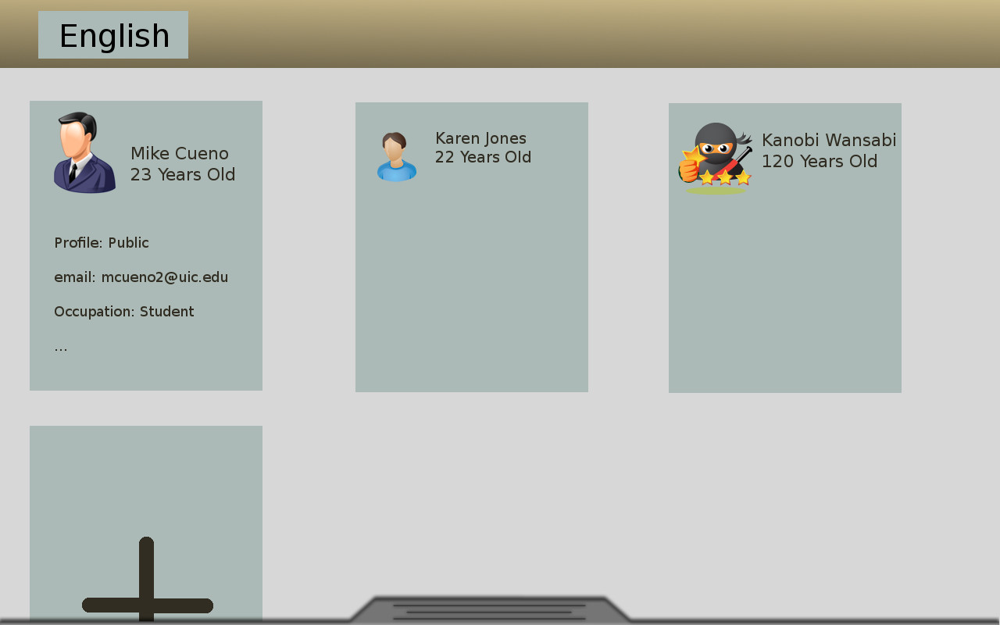
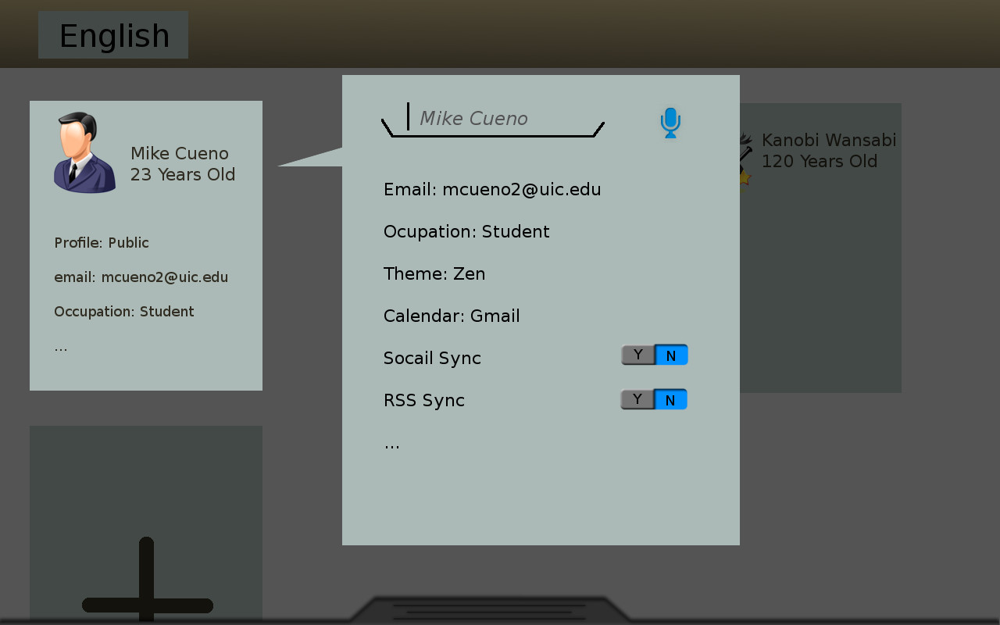
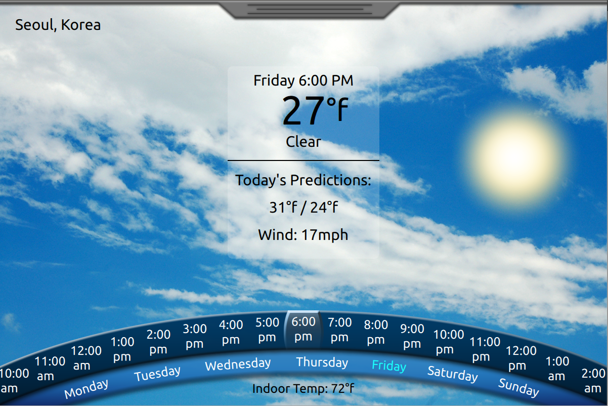
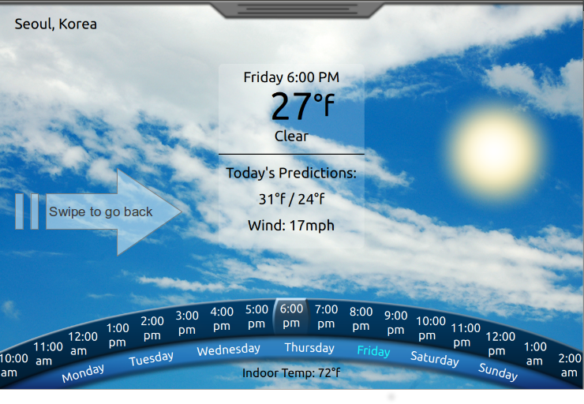
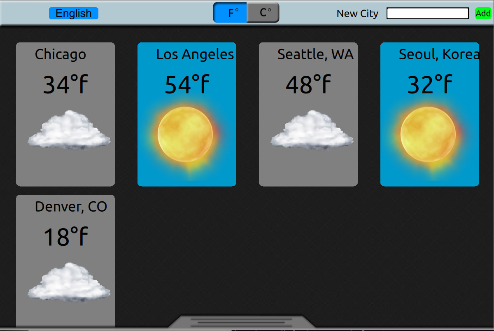
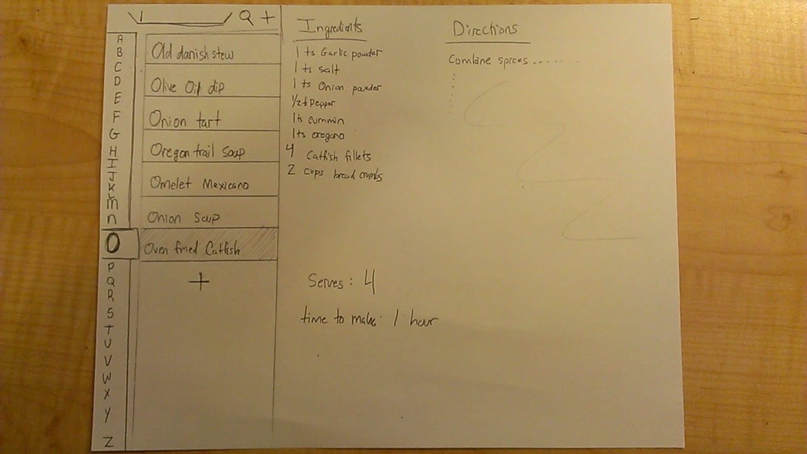

Michael Cueno's Initial Design
This is a moc design for the family planner kitchen display app (Project 2)
Home Screen

The main concept behind this main home screen is to divide functions between user functions and global functions. User functions are those pretaining to a specific family memeber and can be acessed when a user taps on one of the user tiles. Global functions are those which do not contain specific user information, rather, they are functions that should be the same for each user. Things like music control, and home automation are in this category.
Pulling Down on Settings Bar..

After clicking on a specific user..
Input method: Touch + Voice

Weather

This screen is accessable when the user tabs on the weather icon in the homescreen. The slider with the hours will update the stats and change the background accordingly.
Back Action

The user can swipe the screen to the right to get back to the main screen. This will be more obvious because all other screens will slide in from the left, and the first time the user runs the app, this back arrow hint will appear for a few seconds. When the user goes back to the homescreen, the background will remain wherever the hour was left. So for example, if the user swipes two days ahead then goes back to the homescreen, the background will not change. The homescreen resets after 10 minutes of no use however.
Settings for the weather view

Upon tapping on the music icon..

Upon tapping on the clock icon..

The clock 'widget' will have five main functions. The first is the center clock which displays the current time. If the user taps on the clock they can change the city. Next on the bottom left we have the alarms. Going clockwise, we have the timer, a countdown where the user can countdown to a specific time or event, and finally, the stopwatch.
Upon tapping on the cook book icon..

The recipies widget is launched featuring an alphabetical listing of recipies which, on clicked, reveal its ingredients, directions, cook time and serving size, possibly nutritional information.